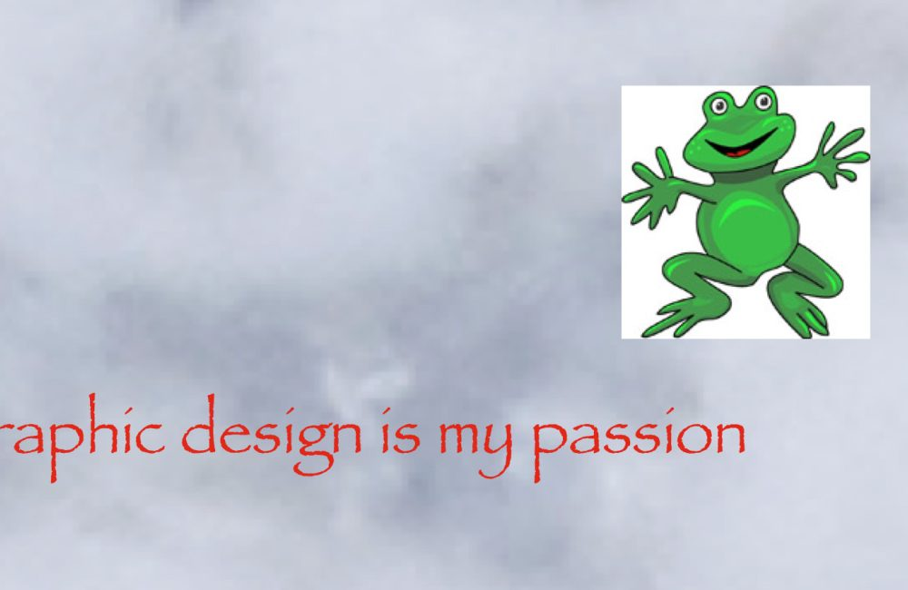
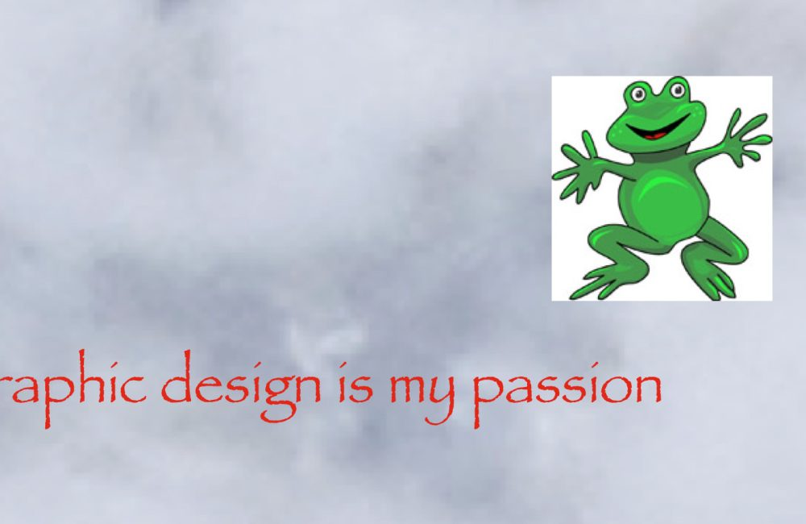

[EXTREMELY LOUD INCORRECT BUZZER NOISE]
NOT APPROPRIATE FOR WIDE MARKET RELEASE
NOT APPROPRIATE FOR WIDE MARKET RELEASE
my names miles everyone loves me because im like if a really normal guy had a lot of problems but was still normal. im marketable. im 200 years old. god never finished me so now i am the way that i am. i forgot how to ride a bike. i didnt learn how to tie my shoes until i hit puberty. i did not name myself after tails from sonic.
can i have a buurger man im so hungry

can i have a buurger man im so hungry
